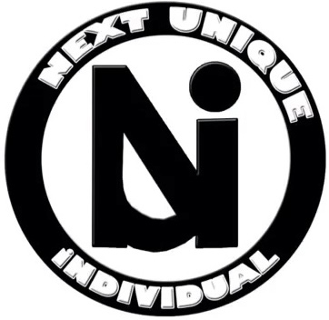

Next Unique individual
Be Different. Be Unique. Be You.
Next Unique individual, also known as N.U.i. is a brand built around individuality, creativity, dreams, and aspirations. Our goal is to encourage people to embrace what makes them unique and confidently pursue their goals.
Image source: Next Unique individual(N.U.i.)
Welcome to N.U.i.
N.U.i. is more than a clothing brand. Through apparel, photography, videography, interviews, and creative storytelling. Next Unique individual provides a platform that highlights entrepreneurs and their journeys.
What Makes You Unique?
Everyone has their own story, goals, talents, and dreams. Next Unique individual was created to celebrate those differences and remind entrepreneurs that being different is something to embrace.